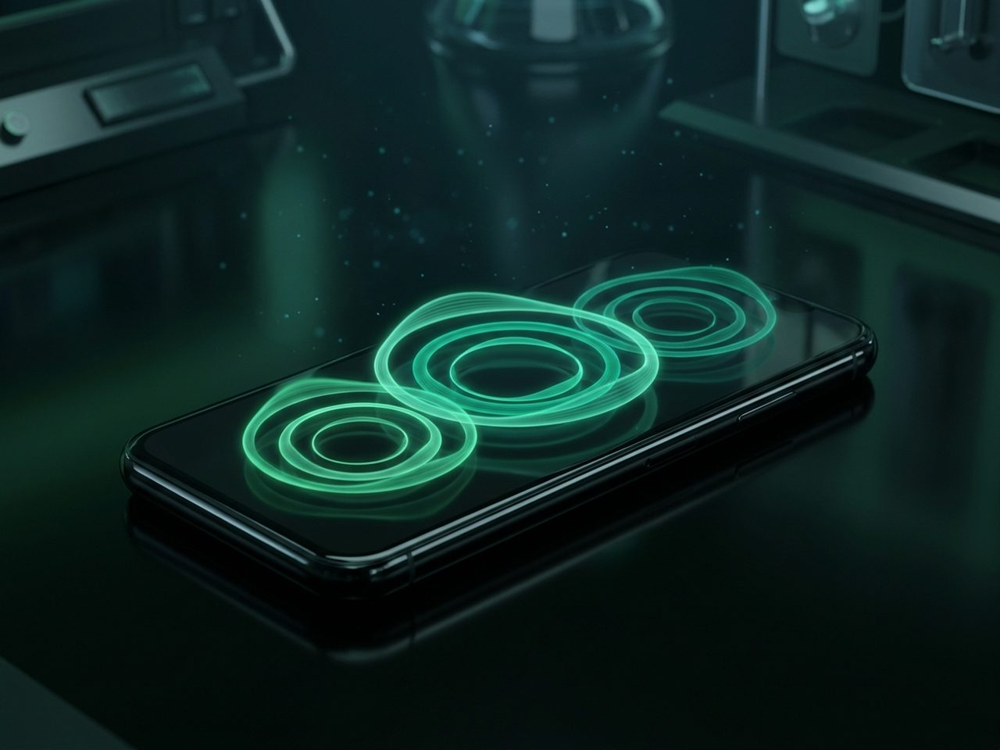

Tek muhatap
Tasarımdan teslimata aynı ekiple çalışırsınız; arada aktarma katmanı yoktur.
Usari üç alanda uçtan uca hizmet verir: size özel uygulama geliştirme, kurumsal web sitesi yapımı ve seçtiğiniz seste konuşan yapay zekâ telefon sekreteri. Her projede aynı yaklaşım: dinle, netleştir, geliştir, teslim et.
İşinize özel mobil ya da masaüstü uygulamayı fikirden yayına kadar birlikte geliştiririz. İşinizi hazır bir kalıba sığdırmayız; akışınıza, kullanıcınıza ve hedefinize göre tasarlanmış bir ürün teslim ederiz.
Kurumunuzu doğru anlatan, hızlı ve çok dilli web siteleri kurarız. Tanıtım sayfasından kurumsal siteye; içerik yapısını, tasarımı ve teknik kurulumu tek elden yürütürüz.
Telefonunuzu, sizin seçtiğiniz seste konuşan bir yapay zekâ asistanı karşılar: aramaları yanıtlar, mesaj alır, randevu düzenler. Sesin tonunu ve konuşma tarzını birlikte belirleriz; asistan, işletmenizi tam istediğiniz gibi temsil eder — siz meşgulken ya da mesai dışında bile telefonunuz yanıtsız kalmaz.

İhtiyacınızı dinliyoruz: neyi, kim için, hangi hedefle yapmak istiyorsunuz? İlk görüşme bir taahhüt değil, tanışmadır.
Görüşmenin ardından kapsamı, yaklaşımı ve takvimi içeren net bir öneri sunuyoruz; ne alacağınızı baştan bilirsiniz.
Geliştirme boyunca çalışan sürümü düzenli aralıklarla gösterir, geri bildiriminizle yönü birlikte ayarlarız.
Ürünü çalışır hâlde teslim eder, kullanımını aktarır ve sonrasında destek için yanınızda kalırız.
Tasarımdan teslimata aynı ekiple çalışırsınız; arada aktarma katmanı yoktur.
Fikir, tasarım, kod, yayın ve destek — sürecin tamamını biz yürütürüz.
Kendi yapay zekâ ürünümüzü geliştiren bir ekibiz; bu birikimi projenize taşırız.
Bir uygulama, web sitesi ya da telefon sekreteri için görüşmek isterseniz bize yazın. Grande AI'daki gelişmelerden haberdar olmak içinse bir e-posta yeter.